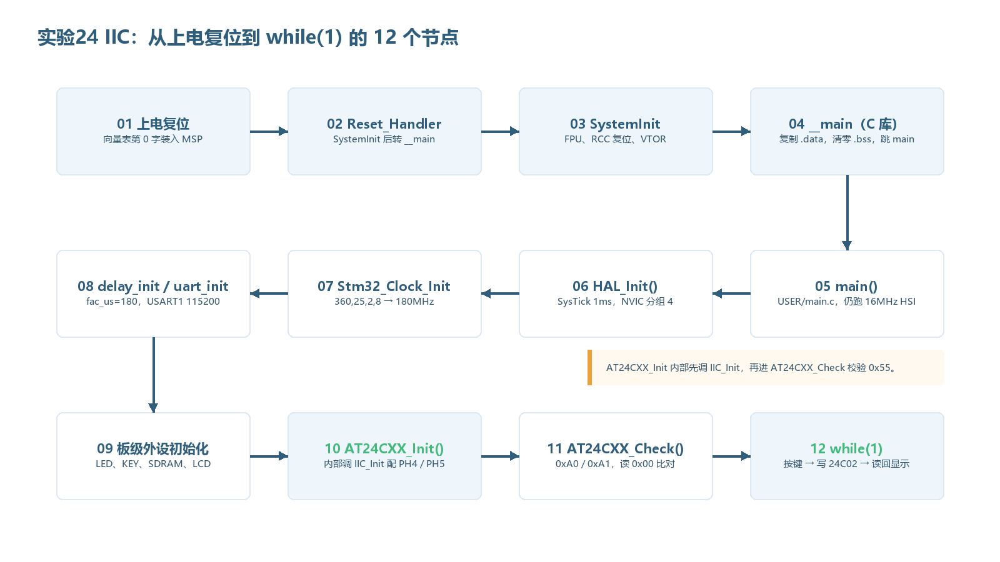
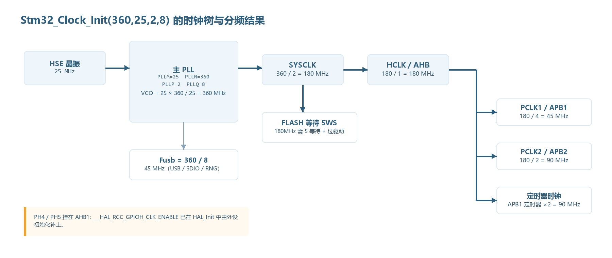
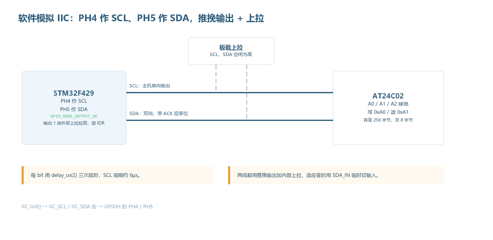
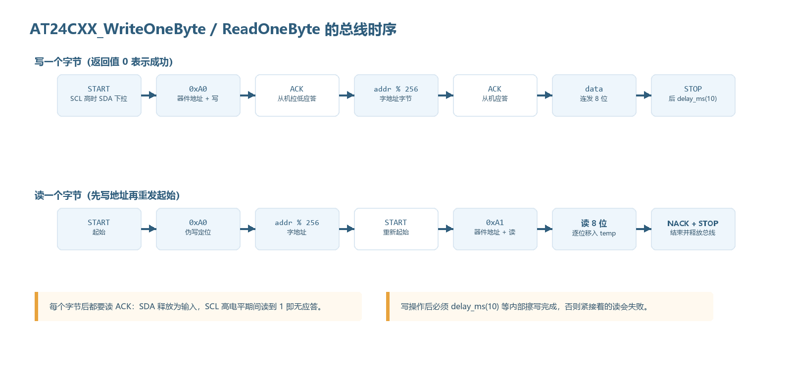
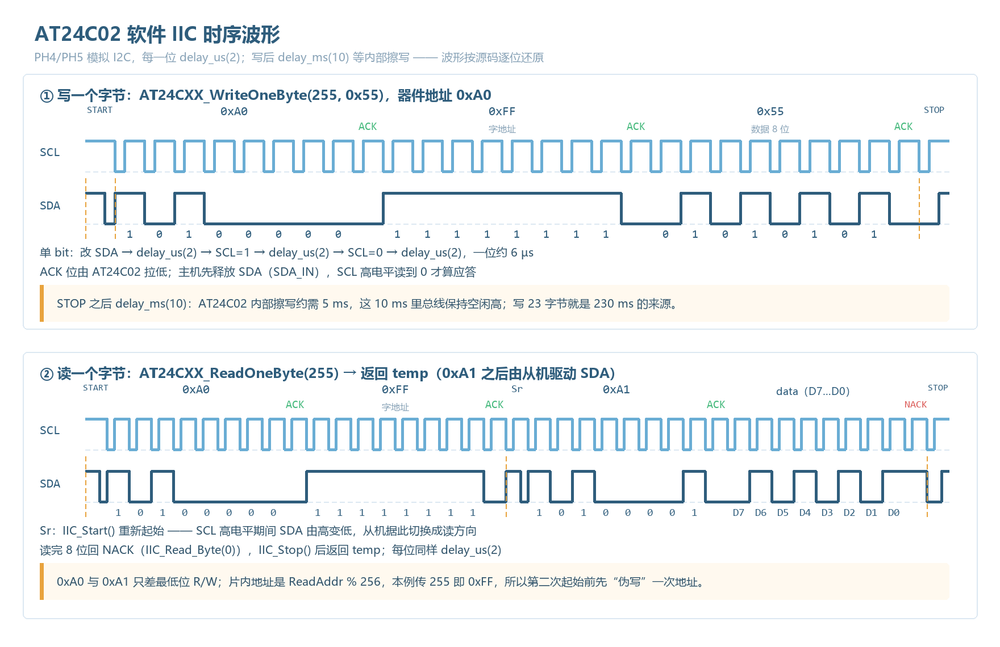

01 实验目标与硬件资源
实验24 的核心不是“会调 IIC”，而是用软件把 IIC 的时序一位一位敲出来：SCL、SDA 都是普通 GPIO，起始、停止、应答、收发字节全部由 delay_us() 拼出来。业务层只做两件事——按下 KEY1 把 TEXT_Buffer 写进 24C02，按下 KEY0 再从地址 0 读回来显示。
| 功能 | 引脚 / 器件 | 工程中的初始化 |
|---|---|---|
| IIC 时钟线 | PH4，推挽输出 + 上拉 | IIC_Init() |
| IIC 数据线 | PH5，推挽输出 + 上拉 | IIC_Init() |
| EEPROM | AT24C02，器件地址 0xA0 / 0xA1 | AT24CXX_Init() |
| KEY1 | PH2，输入上拉 | KEY_Init() |
| KEY0 | PH3，输入上拉 | KEY_Init() |
| LED0 | PB1，推挽输出 | LED_Init() |
| 显示 | LCD（LTDC + 外部 SDRAM） | SDRAM_Init() + LCD_Init() |
GPIO_MODE_OUTPUT_PP（推挽）加 GPIO_PULLUP，不是开漏；读应答时靠 SDA_IN() 宏临时把 PH5 切成输入，读完再 SDA_OUT() 切回来。02 目录与文件分工
| 文件 | 职责 | 本实验关注点 |
|---|---|---|
USER/main.c | 初始化顺序与主循环 | KEY1 写、KEY0 读、DS0 心跳 |
USER/stm32f4xx_it.c | 异常与中断入口 | SysTick_Handler()、HardFault_Handler() |
USER/system_stm32f4xx.c | 复位后的最小配置 | FPU、RCC 复位、VTOR 重定位 |
CORE/startup_stm32f429xx.s | 向量表、栈堆、复位入口 | Stack 0x400、Heap 0x200、Reset_Handler |
SYSTEM/sys/sys.c | 时钟初始化 | Stm32_Clock_Init() 的 PLL 与 Flash 等待 |
SYSTEM/delay/delay.c | 微秒/毫秒延时 | IIC 的每一位都靠它定时 |
SYSTEM/usart/usart.c | 串口与 printf | fputc() 重定向、PA9/PA10 配置 |
HARDWARE/IIC/myiic.c | 软件模拟 IIC 时序 | Start / Stop / Send_Byte / Read_Byte / Wait_Ack |
HARDWARE/24CXX/24cxx.c | EEPROM 读写协议 | 地址拆分、AT24CXX_Check() |
HARDWARE/led|key|sdram|lcd | 板级外设 | 现象呈现：灯、按键、屏幕 |
层次很清楚：myiic.c 只管“电平怎么翻”，24cxx.c 只管“地址怎么发”，main.c 只管“什么时候写、什么时候读”。排查问题时按这个分层往下缩，比在 main.c 里打十行 printf 有效得多。
03 启动流程总览

把 main() 的调用顺序摊开看，规律仍然是先把芯片点亮（时钟、时基、串口），再把板子点亮（LED、按键、SDRAM、LCD），最后才碰外部器件（24C02）。本实验只有一处与实验23 不同：MYDMA_Config() 的位置换成了 AT24CXX_Init()，而它内部只做一件事——调用 IIC_Init()。
- 复位后执行的是启动文件里的
Reset_Handler，先SystemInit，再跳__main。 HAL_Init()建立 1ms 的 SysTick 时基，HAL 库的超时判断都依赖它。Stm32_Clock_Init(360,25,2,8)把主频从 16MHz 的 HSI 切到 180MHz 的 PLL。delay_init(180)里的 180 必须与 HCLK 一致，否则 IIC 的delay_us(4)会变成别的时长，时序整体跑偏。AT24CXX_Init()之后才能调AT24CXX_Check()，因为前者才真正把 PH4 / PH5 配成 GPIO。
04 启动文件与向量表
Stack_Size EQU 0x400; // 栈 1KB，主栈 MSP 从这里向下生长 Heap_Size EQU 0x200; // 堆 512B，本工程几乎不用 malloc __Vectors DCD __initial_sp ; Top of Stack DCD Reset_Handler ; Reset Handler DCD NMI_Handler ; NMI Handler DCD HardFault_Handler ; Hard Fault Handler ... Reset_Handler PROC EXPORT Reset_Handler [WEAK] IMPORT SystemInit IMPORT __main LDR R0, =SystemInit BLX R0 // 先跑 SystemInit LDR R0, =__main BX R0 // 再进 C 库，最终调用 main ENDP
- 复位时内核从地址 0 取两个字：第 0 个字装入 MSP，第 1 个字装入 PC，所以向量表前两项必须依次是
__initial_sp与Reset_Handler。 - F429 的 Flash 起始地址是 0x08000000，上电时 0x00000000 会别名到 Flash，读到就是本工程的向量表。
BLX跳转后SystemInit能正常返回，靠的是 LR 寄存器保存的返回地址；BX __main则不再返回。- 本实验在栈上开了
u8 datatemp[SIZE]，SIZE 约 23 字节，栈 1KB 足够；若读数长度改成几百字节，就要重新评估栈深。
05 SystemInit 与 HAL_Init
void SystemInit(void)
{
#if (__FPU_PRESENT == 1) && (__FPU_USED == 1)
SCB->CPACR |= ((3UL << 10*2)|(3UL << 11*2)); /* set CP10 and CP11 Full Access */
#endif
RCC->CR |= (uint32_t)0x00000001; // 先开内部 HSI，保证有饭吃
RCC->CFGR = 0x00000000; // 清空分频配置
RCC->CR &= (uint32_t)0xFEF6FFFF; // 关 HSEON / CSSON / PLLON
RCC->PLLCFGR = 0x24003010; // PLL 参数恢复复位值
SCB->VTOR = FLASH_BASE | VECT_TAB_OFFSET; // 向量表定位到 Flash 起始
}
SystemInit() 结束时芯片实际上还在 HSI 上跑，真正切到 180MHz 是后面 Stm32_Clock_Init() 干的活。这一点对 IIC 很关键：软件模拟 IIC 的位宽完全由 delay_us() 决定，如果时钟没切、fac_us 却按 180 算，实际延时会短得多，24C02 会直接不应答。
HAL_StatusTypeDef HAL_Init(void)
{
HAL_InitTick(TICK_INT_PRIORITY); // SysTick 1ms，优先级最低
HAL_InitTick 内部：HAL_SYSTICK_Config(SystemCoreClock / 1000U);
...
}
HAL_Delay() 也是 1ms 时基，而 IIC 用的是自己实现的 delay_us()。两套延时并存不冲突：前者靠中断累加 uwTick，后者靠轮询 SysTick->VAL 的差值。06 时钟、延时与串口

// SYSTEM/sys/sys.c RCC_OscInitStructure.PLL.PLLM = pllm; // 25，HSE 先分频 RCC_OscInitStructure.PLL.PLLN = plln; // 360，VCO = 25 / 25 × 360 = 360MHz RCC_OscInitStructure.PLL.PLLP = pllp; // 2，SYSCLK = 360 / 2 = 180MHz RCC_OscInitStructure.PLL.PLLQ = pllq; // 8，Fusb = 360 / 8 = 45MHz RCC_ClkInitStructure.AHBCLKDivider = RCC_SYSCLK_DIV1; // HCLK = 180MHz RCC_ClkInitStructure.APB1CLKDivider = RCC_HCLK_DIV4; // PCLK1 = 45MHz RCC_ClkInitStructure.APB2CLKDivider = RCC_HCLK_DIV2; // PCLK2 = 90MHz HAL_RCC_ClockConfig(&RCC_ClkInitStructure, FLASH_LATENCY_5);
// SYSTEM/delay/delay.c
void delay_init(u8 SYSCLK)
{
HAL_SYSTICK_CLKSourceConfig(SYSTICK_CLKSOURCE_HCLK); // SysTick 跟随 HCLK
fac_us = SYSCLK; // 180MHz → 每微秒 180 个节拍
}
void delay_us(u32 nus)
{
u32 ticks = nus * fac_us; // 需要等的节拍数
u32 told = SysTick->VAL; // SysTick 是递减计数器
while (1) { ... if (tcnt >= ticks) break; } // 差值累加到 ticks 就退出
}
void delay_ms(u16 nms)
{
u32 i;
for (i = 0; i < nms; i++) delay_us(1000); // 毫秒靠微秒循环拼
}
fac_us = SYSCLK，所以delay_init(180)之后delay_us(1)才是真的 1µs；传错参数会让整条 IIC 时序按比例缩放。- SysTick 是 24 位递减计数器，
delay_us()必须同时处理tnow < told（正常递减）与回绕两种情况，源码用两个分支分别累加。 - 本工程不启动 SysTick 中断（
SYSTEM_SUPPORT_OS为 0），所以delay_us()是纯轮询，不依赖中断。 - 串口只用于
printf调试输出，uart_init(115200)配成 8N1、无流控，PA9 / PA10 复用为 AF7。
07 IIC 总线与软件时序

// HARDWARE/IIC/myiic.c
void IIC_Init(void)
{
__HAL_RCC_GPIOH_CLK_ENABLE(); // 先开 GPIOH 时钟
GPIO_Initure.Pin = GPIO_PIN_4|GPIO_PIN_5; // PH4 = SCL，PH5 = SDA
GPIO_Initure.Mode = GPIO_MODE_OUTPUT_PP; // 推挽输出
GPIO_Initure.Pull = GPIO_PULLUP; // 内部上拉，空闲时为高
GPIO_Initure.Speed = GPIO_SPEED_FAST;
HAL_GPIO_Init(GPIOH, &GPIO_Initure);
IIC_SDA = 1;
IIC_SCL = 1; // 总线空闲：两根线都为高
}
void IIC_Start(void)
{
SDA_OUT(); // 确保 SDA 是输出
IIC_SDA = 1;
IIC_SCL = 1;
delay_us(4);
IIC_SDA = 0; // SCL 高电平期间 SDA 由高变低 = 起始
delay_us(4);
IIC_SCL = 0; // 钳住总线，准备发送或接收
}
void IIC_Stop(void)
{
SDA_OUT();
IIC_SCL = 0;
IIC_SDA = 0;
delay_us(4);
IIC_SCL = 1;
delay_us(4);
IIC_SDA = 1; // SCL 高电平期间 SDA 由低变高 = 停止
}
// myiic.h：直接改 MODER 寄存器实现方向切换
#define SDA_IN() {GPIOH->MODER &= ~(3 << (5*2)); GPIOH->MODER |= 0 << (5*2);}
#define SDA_OUT() {GPIOH->MODER &= ~(3 << (5*2)); GPIOH->MODER |= 1 << (5*2);}
#define IIC_SCL PHout(4) // 输出寄存器 ODR 的 bit4
#define IIC_SDA PHout(5)
#define READ_SDA PHin(5) // 输入寄存器 IDR 的 bit5
- 推挽输出在写 1 时是主动拉高，不是“浮空靠上拉”，所以源码必须靠
SDA_IN()在读之前把 PH5 切成输入，否则从机拉低时会发生电平冲突。 - 起始与停止都要求“SCL 为高期间 SDA 跳变”，两个
delay_us(4)分别保证建立时间与保持时间。 - 发送一个位是“改 SDA → 延时 2µs → SCL 拉高 → 延时 2µs → SCL 拉低 → 延时 2µs”，一个 SCL 周期约 6µs。
IIC_Wait_Ack()先切输入、释放 SDA，再拉高 SCL 读电平；ucErrTime超过 250 次就当作无应答，主动发 Stop 退出，避免死等。
08 AT24C02 与地址编码
AT24C02 的 7 位器件地址是 1010 A2 A1 A0，阿波罗板上 A2 / A1 / A0 全部接地，所以写地址为 0xA0、读地址为 0xA1。容量 256 字节，正好用一个字节表示片内地址，超过 255 就会回卷。
// HARDWARE/24CXX/24cxx.h #define EE_TYPE AT24C02 // 板上焊的是 24C02 // HARDWARE/24CXX/24cxx.c u8 AT24CXX_ReadOneByte(u16 ReadAddr) { IIC_Start(); if (EE_TYPE > AT24C16) { IIC_Send_Byte(0XA0); // 大容量：先发写命令 IIC_Wait_Ack(); IIC_Send_Byte(ReadAddr >> 8); // 再发高地址 } else IIC_Send_Byte(0XA0 + ((ReadAddr / 256) << 1)); // 24C02 只发 0xA0 IIC_Wait_Ack(); IIC_Send_Byte(ReadAddr % 256); // 片内地址 0~255 IIC_Wait_Ack(); IIC_Start(); // 重新起始，切换成读 IIC_Send_Byte(0XA1); IIC_Wait_Ack(); temp = IIC_Read_Byte(0); // ack=0，读一个字节后回 NACK IIC_Stop(); return temp; }
- 写方向固定
0xA0，读方向固定0xA1，最低位就是 R/W 位。 - EE_TYPE 宏决定了地址怎么拆：24C02 只需要一个字节片内地址，
ReadAddr/256恒为 0，所以实际发出的就是 0xA0。 - 读操作是“写地址 → 重新起始 → 读数据”的三段式，中间那个
IIC_Start()不能省，否则从机不知道要换方向。 IIC_Read_Byte(0)传 0 表示读完回 NACK，告诉从机“不要再发了”，随后必须IIC_Stop()。
AT24CXX_WriteOneByte() 末尾加了 delay_ms(10)，连写 23 个字节就要 230ms 左右，这是按 KEY1 后屏幕会“顿一下”的原因。09 读写时序与自检


写和读都从 START 起步：先发 8 位器件地址 0xA0，再发 8 位字地址（本例写 255，即 0xFF），第 9 位由 AT24C02 拉低应答。写操作继续送数据 0x55、等一次 ACK 后 STOP，再由 delay_ms(10) 等内部擦写；读操作则用第二次起始（Sr）把方向切成 0xA1，读回 8 位后由主机回 NACK 再 STOP。
u8 AT24CXX_Check(void)
{
u8 temp;
temp = AT24CXX_ReadOneByte(255); // 先读标志地址，避免每次开机都写
if (temp == 0X55) return 0; // 已经是 0x55，直接通过
else
{
AT24CXX_WriteOneByte(255, 0X55); // 第一次上电：写入标志
temp = AT24CXX_ReadOneByte(255);
if (temp == 0X55) return 0; // 读回一致才算成功
}
return 1; // 返回 1 表示检测失败
}
void AT24CXX_Write(u16 WriteAddr, u8 *pBuffer, u16 NumToWrite)
{
while (NumToWrite--)
{
AT24CXX_WriteOneByte(WriteAddr, *pBuffer); // 每次写一个字节
WriteAddr++;
pBuffer++;
}
}
- 标志地址选在 255（最后一个字节），既能验证读写通路，又不会覆盖用户数据区 0~22。
- 先读再写，是为了让第二次开机直接命中
0x55，省掉一次擦写。 - 写一个字节的完整流程是：Start → 0xA0 → ACK → 片内地址 → ACK → 数据 → ACK → Stop → delay_ms(10)。
- 读到 0xFF 通常表示“器件没应答”或“这一格从没写过”，擦除态就是 0xFF，所以判据必须是精确的 0x55。
10 主循环与按键逻辑
// USER/main.c
const u8 TEXT_Buffer[] = {"Apollo STM32F4 IIC TEST"};
#define SIZE sizeof(TEXT_Buffer) // 含字符串结尾的 0，共 23 字节
AT24CXX_Init(); // 内部只调 IIC_Init
while (AT24CXX_Check()) // 检测不到 24C02 就死循环
{
LCD_ShowString(30,150,200,16,16,"24C02 Check Failed!");
delay_ms(500);
LCD_ShowString(30,150,200,16,16,"Please Check! ");
delay_ms(500);
LED0 = !LED0; // DS0 闪烁报警
}
while (1)
{
key = KEY_Scan(0); // 0 = 不支持连按
if (key == KEY1_PRES) // KEY1：写入
{
LCD_Fill(0,170,239,319,WHITE);
LCD_ShowString(30,170,200,16,16,"Start Write 24C02....");
AT24CXX_Write(0, (u8*)TEXT_Buffer, SIZE);
LCD_ShowString(30,170,200,16,16,"24C02 Write Finished!");
}
if (key == KEY0_PRES) // KEY0：读出并显示
{
AT24CXX_Read(0, datatemp, SIZE);
LCD_ShowString(30,190,200,16,16,datatemp);
}
i++;
delay_ms(10);
if (i == 20) { LED0 = !LED0; i = 0; } // 约 200ms 心跳
}
KEY_Scan(0)内部有 10ms 消抖，并带优先级 KEY0 > KEY1 > KEY2 > WK_UP，所以同时按下时只会返回 KEY0。KEY1_PRES与KEY0_PRES都是“按下瞬间”事件，松开后才允许下一次触发。- 写入前用
LCD_Fill()清掉下半屏，避免上一次的读结果显示残留。 datatemp[SIZE]是局部数组，读回内容末尾自带字符串结束符，可以直接传给LCD_ShowString()。
11 交互演示：写入与读回
AT24CXX_Write(0, TEXT_Buffer, 23)，KEY0 对应 AT24CXX_Read(0, datatemp, 23)；未写入就读，读到的会是 0xFF 擦除态，屏幕上显示乱码。以上仅演示逻辑。12 操作与现象对照
| 操作 | 代码路径 | 现象 |
|---|---|---|
| 上电 / 复位 | 初始化 → AT24CXX_Check() | 屏幕先显示 IIC TEST，随后出现 24C02 Ready! |
| 24C02 未接或损坏 | while(AT24CXX_Check()) | DS0 约 1 秒闪一次，屏幕交替显示 Check Failed 与 Please Check |
| 按 KEY1 | AT24CXX_Write() | 屏幕先显示 Start Write 24C02....，约 230ms 后变为 Write Finished! |
| 按 KEY0 | AT24CXX_Read() | 屏幕显示 The Data Readed Is: 与读回的字符串 |
| 空片直接按 KEY0 | 读 0xFF | 显示一串乱码或空白，属正常现象 |
| 空闲 | 主循环 i++ | DS0 约每 200ms 翻转一次，表示系统在跑 |
13 关键逻辑复盘
- 时钟：
Stm32_Clock_Init(360,25,2,8)把 HCLK 定到 180MHz，delay_init(180)让delay_us()有正确的倍乘系数。 - 引脚：
IIC_Init()打开 GPIOH 时钟，把 PH4 / PH5 配成推挽输出加内部上拉，并把两根线都置 1。 - 时序：Start / Stop 用
delay_us(4)保证 SCL 高电平期间 SDA 跳变；每个数据位用三次delay_us(2)。 - 方向：写数据时
SDA_OUT()，读应答与读字节前SDA_IN()，读完立即切回输出。 - 协议：写 = 0xA0 + 地址 + 数据；读 = 0xA0 + 地址 + 重起始 + 0xA1 + 读字节。
- 自检：地址 255 存 0x55，
AT24CXX_Check()返回 0 才继续，否则闪灯报警。 - 业务：KEY1 写 23 字节，KEY0 读回 23 字节，DS0 用 200ms 心跳证明主循环没卡死。
14 常见问题排查
| 现象 | 可能原因 | 排查方法 |
|---|---|---|
| 一直显示 24C02 Check Failed | delay_init() 参数不是 180，时序整体偏快 | 检查是否误写成 delay_init(168) 或漏调 |
| 读回全是 0xFF | 从机没应答，写操作根本没落盘 | 用逻辑分析仪看 0xA0 后第 9 个时钟 SDA 是否为低 |
| 偶尔能读、偶尔失败 | PH5 忘记切回 SDA_OUT() | 检查 IIC_Read_Byte() 之后是否还有写操作 |
| 屏幕显示乱码 | 从未按过 KEY1，读到的是擦除态 | 先按 KEY1 再按 KEY0 |
| 按键没反应 | KEY 优先级或消抖导致漏触发 | 改用 KEY_Scan(1) 试连按 |
15 总结
实验24 用 myiic.c 把 IIC 的电气时序完全握在手里：起始、停止、应答、收发字节都是普通 GPIO 加 delay_us()。理解这一层之后，换引脚、换速率、甚至给没有硬件 IIC 的芯片挂 EEPROM，都只需要改宏和延时。
再往上，24cxx.c 把“器件地址 + 片内地址 + 数据”的协议封成 ReadOneByte / WriteOneByte，业务层就只剩“从 0 地址读写 23 字节”。分层清晰，是这段代码最值得复用的地方——后面实验25 的 PCF8574、实验26 的 AP3216C，用的都是同一份 myiic.c。